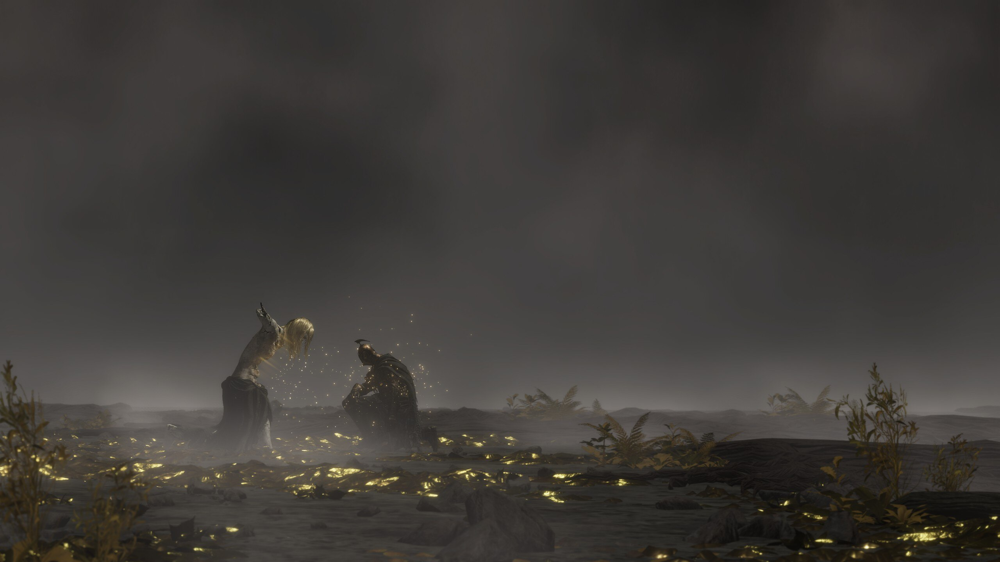

Gamen doe ik al van kinds af aan. Dit begon met de originele GameBoy en met games zoals Pokémon Red en Blue (Waar is de tijd?). Momenteel speel ik vooral de Soulsborne games op PC. Met “Soulsborne” bedoel ik de reeks games die gemaakt zijn geweest door de Japanse ontwikkelaar FromSoftware: de Dark Souls-serie, Elden ring, Armored Core enzovoort. Deze games staan bekend voor de prachtige werelden die je moet verkennen (met bijhorende magnifieke soundtracks), hun boeiende lore en hun hoge moeilijkheidsgraad.
